Raven Web Graphical User Interface
Raven Web GUI Overview
The Raven Web GUI is a User Interface designed to primarily facilitate "batch runs" consisting of a large number of files through "workflows" consisting of multiple technologies. The Raven GUI can be used to run either local audio or serverside/shared audio through one of several preconfigured HLT workflows.
Below is a basic example of the Raven Web GUI landing page:
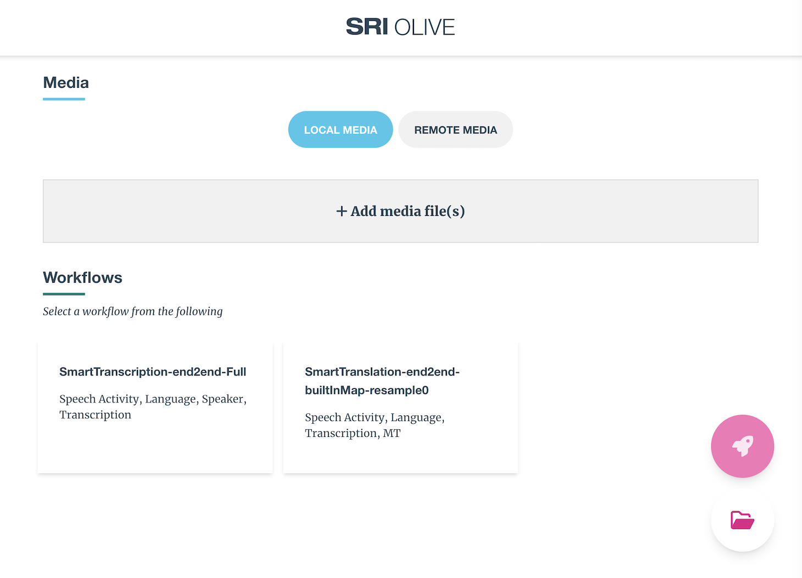
OLIVE TLS/Secure Mode Disclaimer
If you have launched OLIVE / Martini with TLS enabled for secure communication, you will need to install a valid client certificate (with respect to the certificates Martini is using) into your browser before you will be able to access Raven.
Please work with your IT department to obtain valid certificates.
Using the Raven Web GUI for Analysis
In order to submit audio to a workflow on the WebGUI you must:
- Add Media
- Select an available OLIVE Workflow from the Workflows List
- Submit the analysis request
1. Add Media
There are two ways to do this. Local Media and Remote Media.
Local Media
The primary method is by using the "Local Media" tab, and adding media to the job by dragging them into the gray + Add media file(s) box, or by clicking within this box to open a file browser dialog to select files.
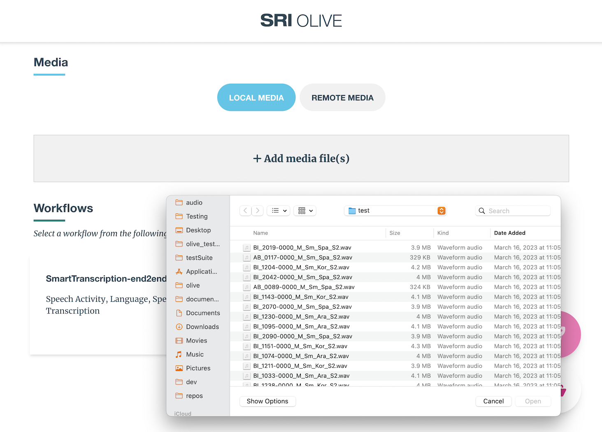
If dragging files in, make sure to 'drop' them on the box. If the box is missed, and the files are dropped elsewhere on the Raven page, the browser itself will attempt to open the media files, instead of adding them to the submission. 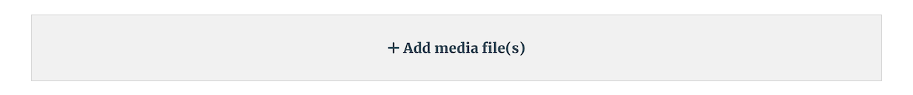
As of the OLIVE 5.6.0 release, files can now be added incrementally, i.e. dragged in one at a time or in multiple batches. However, due to browser limitations, duplicate filenames are not allowed within the same request, even if they are unique files from a different location on disk. If duplicate files are detected, the user must resolve the conflict with one of the following actions:
- Rename the new file
- Overwrite the old file with the new file in the submission
- Delete the new file from the submission
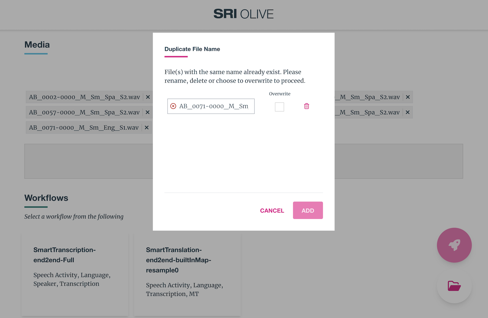
Once media is added and chosen, proceed to step #2.
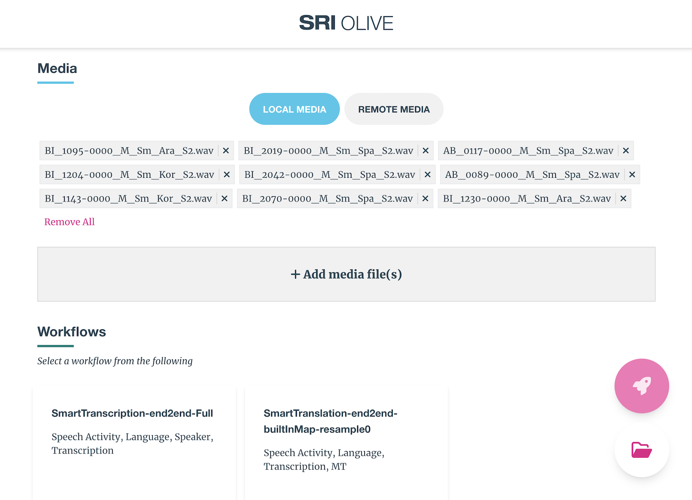
Remote Media
If many files or large files are intended to be processed, or the same files will be processed many times - and if the OLIVE server shares a file system with the audio file location, the "Remote Media" feature is provided as a convenience to save the overhead of uploading files through the browser with Raven for each analysis submission. To use this feature, first the audio must be copied, moved, or linked to a location that is mounted by the OLIVE Martini container.
By default, Raven will look in this location for files to populate the "Remote Media" tab:
olive5.7.1/oliveAppData/olive-data/media/shared/
For convenience, once the OLIVE Martini container is started for the first time, this location is created if it doesn't exist already. Any files here should be automatically added to the "Remote Media" tab in Raven and be allowable choices as Raven input.
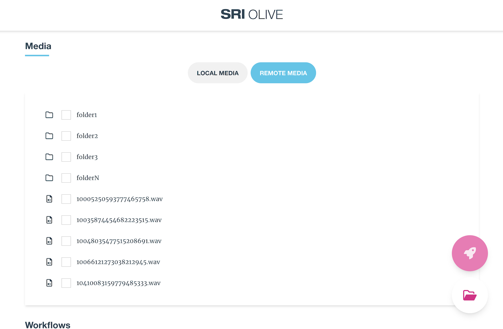
Advanced users may be able to mount additional volumes and configure this to a different location. Please contact SRI if this is a requirement.
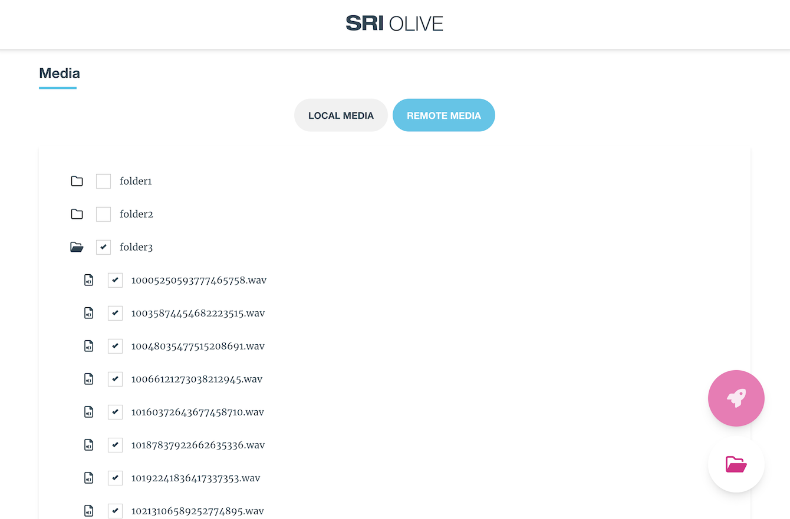
Once the desired audio is selected, job submission is exactly as previously described.
2. Select an available OLIVE Workflow from the Workflows List
Below the Media panel, a list of available, validated workflows is displayed. When first connecting to the Raven UI, it has to query the server to retrieve a list of valid, available workflows - this can take a few moments, and the UI will prompt with a "Please wait while workflows are loading ..." message until this handshake is completed.
Once the list is provided, select the desired workflow and move to the next step. Each workflow displays the workflow name, and information about which Tasks it performs (i.e. plugins it runs, or results it provides).
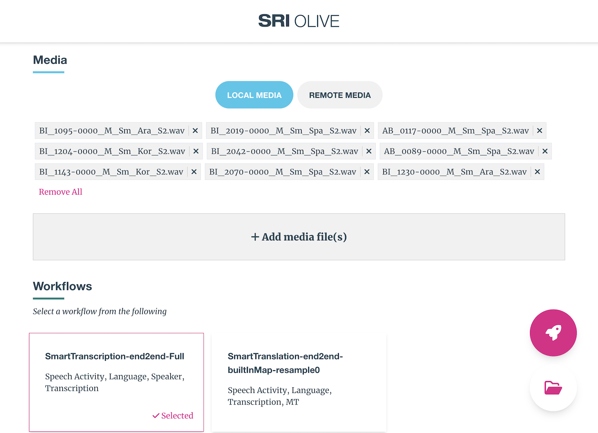
If any workflows fail to validate, due to missing plugins or for any other reason, there will be a message in this pane offering more details on why a given workflow is unavailable when selected. This message should only be encountered by advanced users.
3. Submit Analysis Job
By selecting the "rocket" multi-action button in the lower right:
And choosing "Analyze".
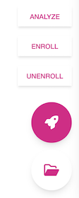
Analyzing Results
After running a set of data through a workflow you'll be directed to the results page which displays the HLT results for all plugins within the workflow that was run for each file that was submitted. The results page has a menu bar with several different ways to organize the files and scores on the page.
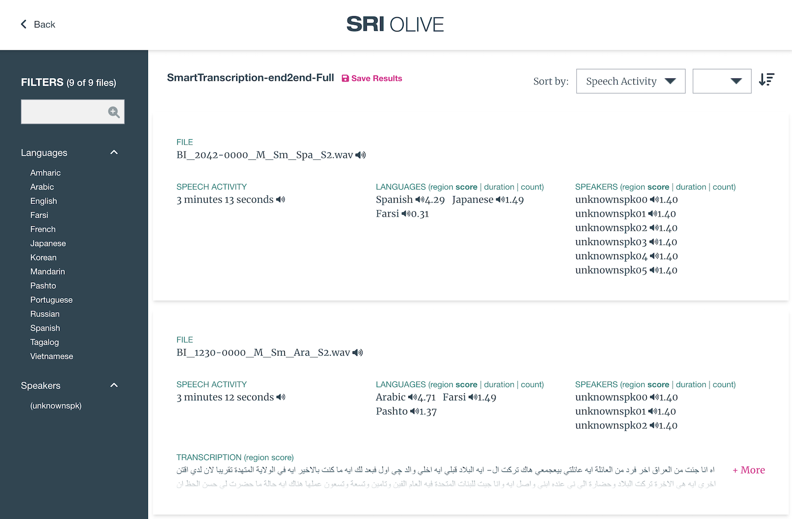
Stereo Media with Raven UI
OLIVE 5.7.1 introduced the ability to change how Raven will treat stereo audio through a settings panel available at the top of the UI.
The default behavior prior to this release was for all files to be merged to mono and then processed as single channel audio files. Now, users can specify to use this legacy behavior, specify one or the other channel to process, or split the audio and process both channels independently.
Stereo Handling Configuration
To access the Raven configuration options, select the menu icon in the top right of the Raven UI, and choose "Settings."
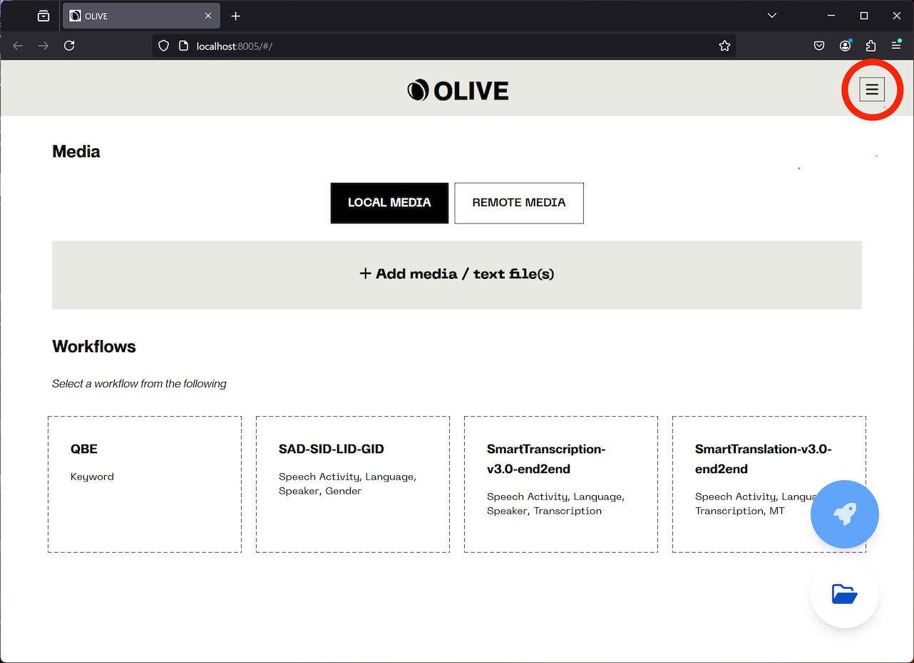
Then select the "Stereo Media" dropdown:
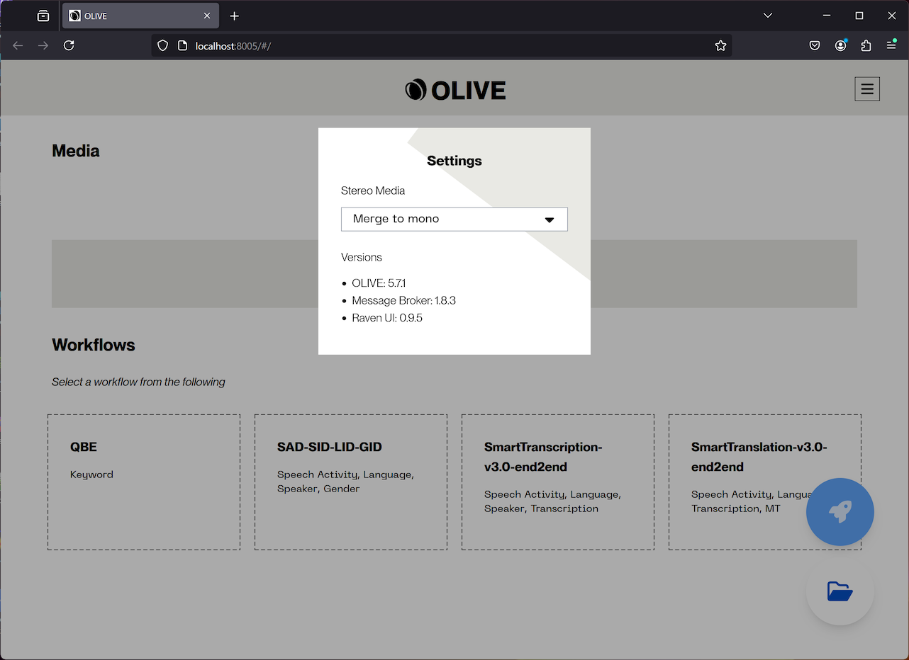
And choose from the following options:
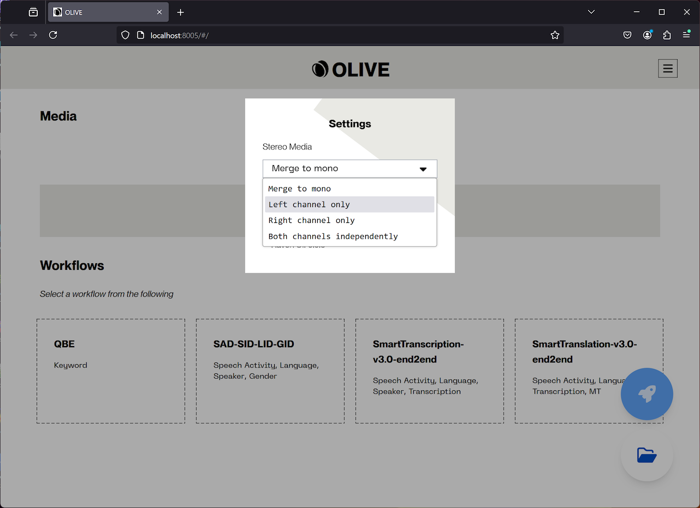
- Merge to mono - This is the default/legacy behavior of the Raven UI, and the standard behavior of the Nightingale UI. Both channels of the stereo audio are merged into one and processed as one job.
- Left channel only - This method will isolate the left channel of the input audio and report analysis results on just this channel. Nothing from the right channel will be scored or reported on, it is all discarded.
- Right channel only - Identical to the previous option, but focusing on the right channel.
- Both channels independently - This method retains the separation of both channels of the input audio and submits each side as a separate job. Results are reported on the analysis page for both channels. The next section outlines how to identify stereo results in the Raven Analysis display, and how to tell which results belong to which channel.
Stereo Results Display
There is now a small addition to the Filename heading for each media analysis result after running a workflow with Raven that allows users to distinguish between mono and stereo media files, and also to determine which channel the displayed results belong to. This addition is a small speaker iconograph, located to the right of the filename:
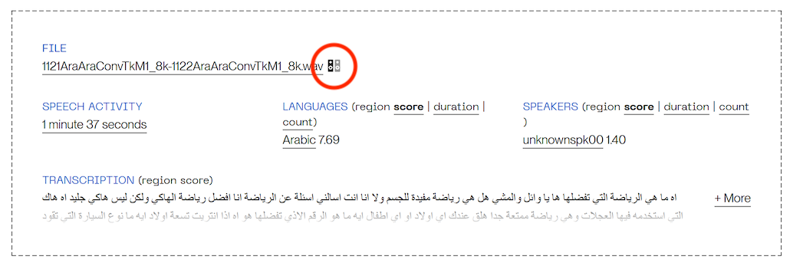
There are three possible icons for this location.
Mono Media Results
A single, wider speaker indicates that the media was either mono audio to begin with, or was processed with the original "merge to mono" method. There will be only one analysis result entry displayed for this file. Here is an example of this:
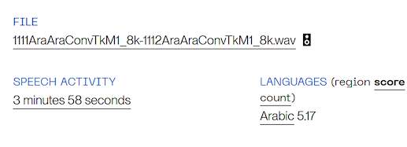
Left Channel Media Results
A pair of speakers indicates that the media was originally stereo, and that one of the stereo-preserving processing options was chosen. If the left speaker is darker and bolder, with the right grayed out, that indicates that the results in this entry pertain to the left channel of the input media. If "Left channel only" processing was selected for the stereo handling configuration, there will be only one results entry for this file. If "Both channels independently" was selected, this represents the results for the left channel, and there will be another results entry with the same File name containing the results from the right.
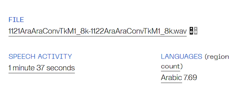
Right Channel Media Results
If the right speaker is darker and bolder, with the left grayed out, that indicates that the results in this entry pertain to the right channel of the input media. If "Right channel only" processing was selected for the stereo handling configuration, there will be only one results entry for this file. If "Both channels independently" was selected, this represents the results for the right channel, and there will be another results entry with the same File name containing the results from the left.
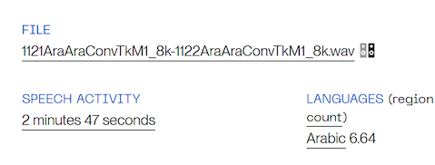
Results from Both Channels
This shows an example where "Both channels independently" was selected, and the results for both channels of the input file can be clearly seen in the Raven analysis display:
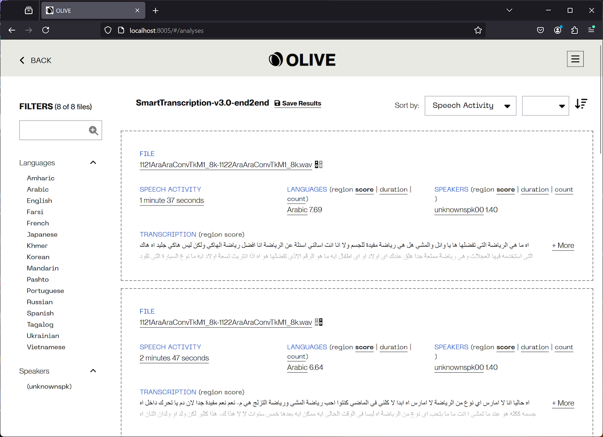
Saving/Exporting Results
Raven now offers the capability of exporting batch results to an archive that can be later re-ingested by Raven to recall or revisit the results of an OLIVE Workflow analysis request without repeating the processing.
To export results, once you the batch submission has completed, select the "Save Results" option adjacent to the Workflow name at the top of the results page:
This will save a .olive results bundle to your browser's default "Downloads" location. The name will include the date and time the submission was performed, and will resemble: olive_result_2023-08-14T21_57_12.olive. You are free to rename as desired after the download completes.
Due to web browser file permission access limitations, for audio to be reviewable in the context of the results at a later time, all submitted audio must be saved with these results. For batches of many files, or file batches containing very large files, this bundle can be quite large.
Importing/Recalling Past Results
To revisit saved results, select the "Load Results" folder icon from the Raven landing page:
And choose to import the file saved in the saving/exporting step above. The bundle should be unpacked and populate the Analysis page just as it appeared directly after processing the files initially.
Enrollment and Unenrollment
Some workflows support enrollment and unenrollment through the Raven UI if the workflow uses enrollable plugins and is configured properly.
Enrollment and unenrollment is performed on a plugin and domain level; not on the workflow level. This means that if you enroll a model using a workflow, it's actually enrolling for the specific plugin/domain that that workflow is using, and will be accessible if running that plugin directly, or if running other workflows that call on this plugin. For example, if you enroll a new speaker using a workflow enrollment, it is enrolled into the same location that it would be if enrolling with that plugin directly, and scores for the new model will be reported if scoring with this plugin directly. Workflow enrollment/unenrollment is provided as a convenience.
Enrollment
Enrolling through Raven is a similar process to scoring. Begin by adding media to the job as described above, and then selecting a workflow. If the workflow supports enrollment, then the option will appear on the next step: Selecting the "rocket" multi-action button in the lower right, and choose "Enroll".
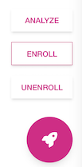
This will present the Enrollment Configuration dialog, that allows
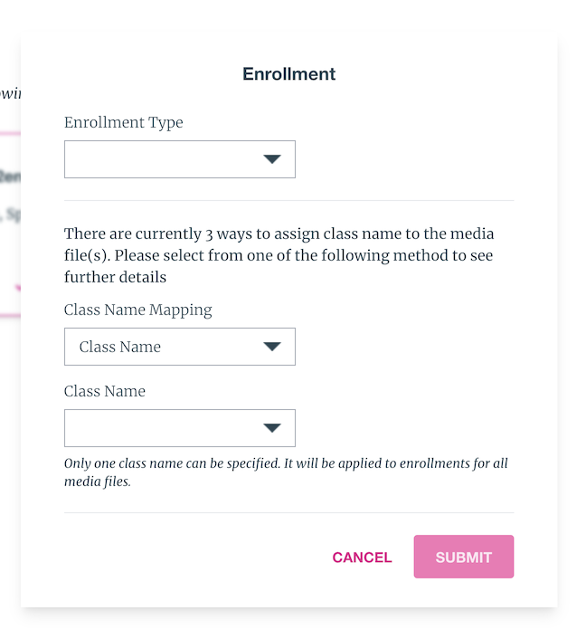
Enrollment Type
First, the "Enrollment Type" must be chosen. This determines what the enrollments for this job will represent, and each enrollment job can have only one type. Most workflows will also only have one "Type" available, so this step should be simple. The most common "Enrollment Type" is going to be "Speaker", for enrolling candidates into Speaker Identification or Speaker Detection plugins. You may encounter "Keyword" enrollment types if the workflow is configured to use Query-by-Example Keyword Spotting, for example.
Class Name Mapping
The next section configures how to select and assign class names to the enrolled models. There are a few options provided for convenience. After configuring this section, select "Submit" to continue.
Class Name
If all data is one "Speaker" (or whatever the corresponding Enrollment Type class is), this method can be used. The user inputs a single class name that is used for all of the enrollment input. If there are multiple classes that are going to be enrolled, each class requires a separate enrollment request when using this method.
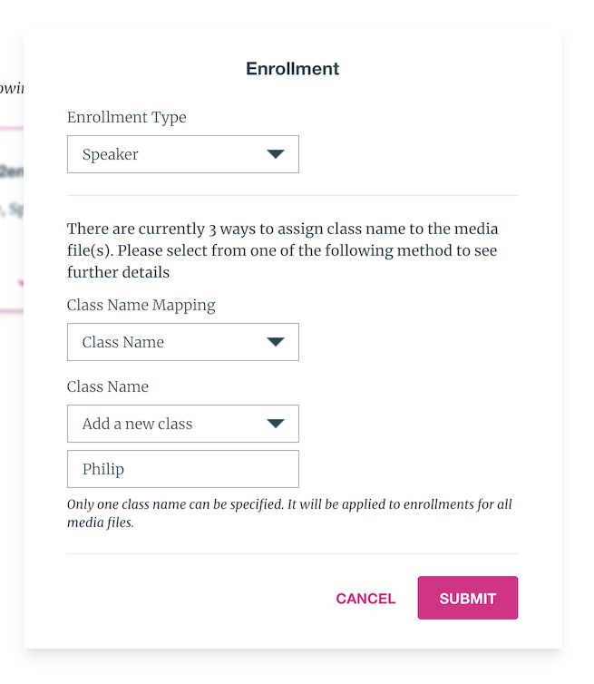
You can choose to augment an existing class enrollment, by choosing it from the drop-down. Or select "Add a new class" to enroll a new class completely.
Delimiter
If the input data filenames are already named in such a way that the start of the filename corresponds to the desired name of the enrollment class, the 'Delimiter' mapping mode may be used. This mode will use a character input by the user to split a filename and automatically extract a class name to use for enrollment. This allows many files from different classes all to be enrolled at once.
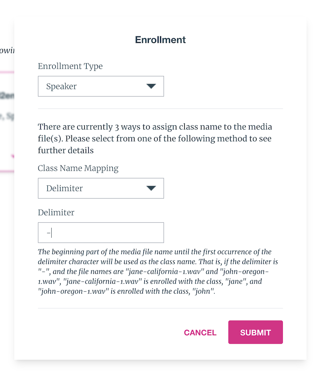
As an example, if the chosen delimiter was -, and the input filenames:
philip-radio_21Aug2023.wav
philip-studioMic_12Nov2021.wav
george-unknown.wav
suzie-greetingCard_storytime.wav
This would allow philip, george, and suzie to all be enrolled with a single Raven submission.
The beginning part of the media file name until the first occurrence of the delimiter character will be used as the class name. That is, if the delimiter is "-", and the file names are "jane-california-1.wav" and "john-oregon-1.wav", "jane-california-1.wav" is enrolled with the class, "jane", and "john-oregon-1.wav" is enrolled with the class, "john".
Class Mapping File
The most flexible method of assigning class names is using a Class Mapping File. This allows the user to provide a text file listing all of the input files, and manually assigning an enrollment class name for each. If the input data isn't named in a manner that suits the delimiter method, and several different classes need to be enrolled, this is the best option.
The Class Mapping File formatting is a tab-separated, two column list, where the columns are:
<input filename 1> <className A>
<input filename 2> <className B>
...
<input filename N> <className Z>
It is possible to mix and match multiple files for a given classname, and as many distinct classes as desired as long as the mapping file follows the format above. An example:
20131212T064501UTC_10831_A.wav philip
20131212T084501UTC_10856_A.wav philip
20131212T101501UTC_10870_A.wav suzie
20131212T104501UTC_10876_A.wav chuck
20131212T111501UTC_10878_A.wav suzie
20131212T114501UTC_10880_A.wav aaron
20131212T134501UTC_10884_A.wav philip
No part of the filename is used to assign or determine the enrollment class name.
Note that every input filename must be accounted for in the Class Mapping File.
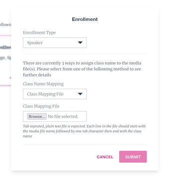
Unenrollment
Unenrollment is used to remove a previously enrolled class from the system. It is the only Raven job submission feature that is accessible without adding media. To reach it, select the "rocket" multi-action button in the lower right, and choose "Unenroll".
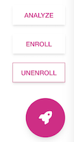
To proceed, choose the desired class type (again, likely "Speaker") from the dropdown list that corresponds to the unenrollment action to perform. Next, select the class
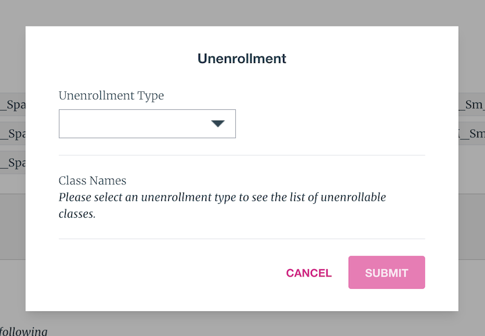
Only single-class unenrollment is currently supported through Raven. If multiple unenrollments are to be performed, they must be submitted one at a time.
Currently, a class must be enrolled in its entirety, even if several audio files contributed to its enrollment - support is not in place to selectively remove audio from an enrollment.